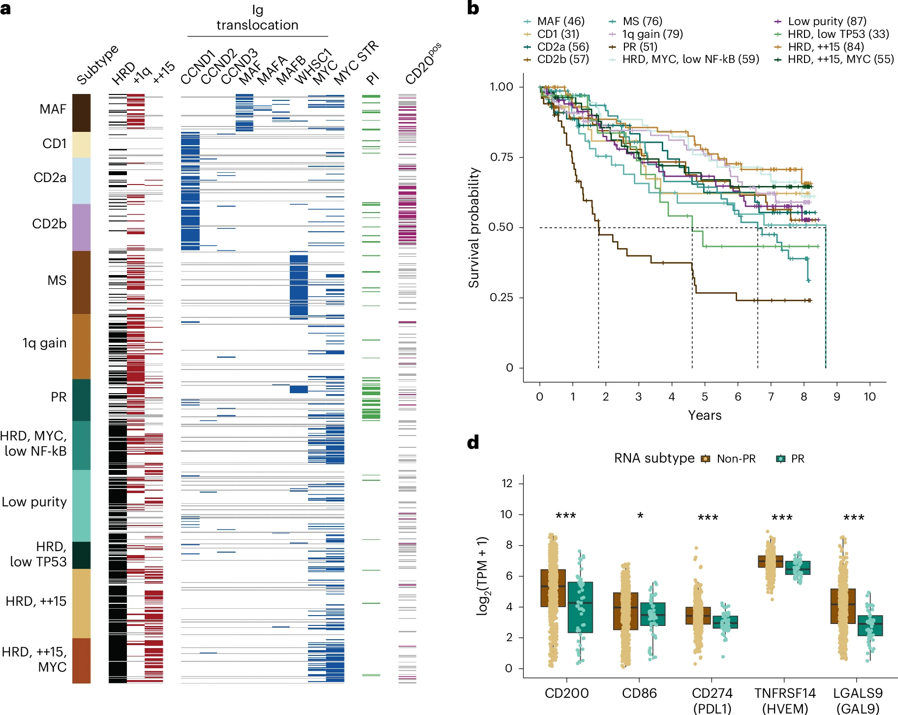
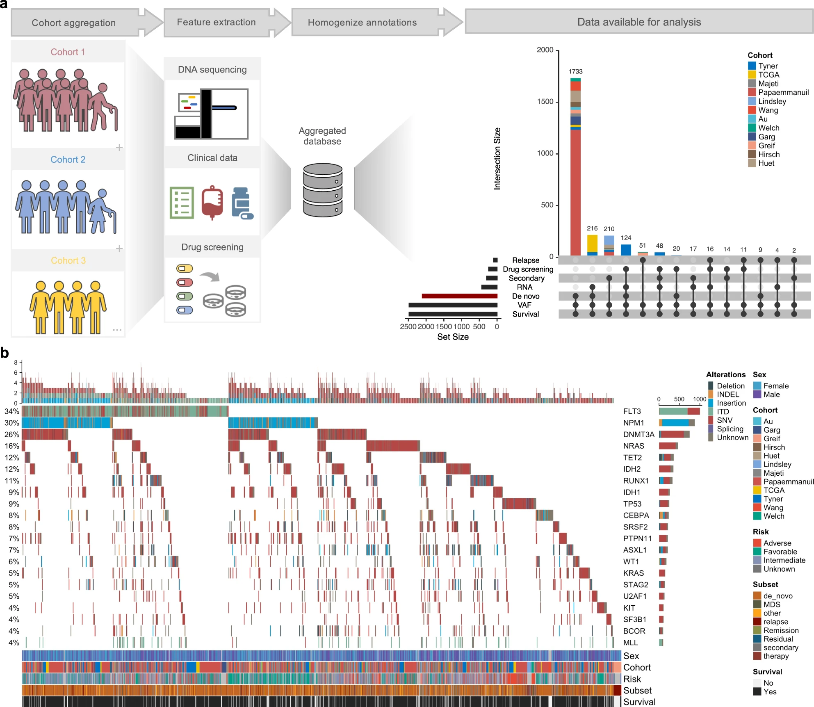

— citations
— h-index
Publications
Selected peer-reviewed papers in reverse chronological order.
Full list on Google Scholar | ORCiD


Selected peer-reviewed papers in reverse chronological order.
Full list on Google Scholar | ORCiD

